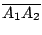
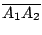

| |
位置 (location) 是空間的基本概念之中最為原始者。空間本身其實就是宇宙之中所有可能的位置的總體。在幾何學的討論中，通常用點 (point)
來標記位置， 所以點其實就是位置的抽象化 (abstraction)。當一個動點 (moving point) 由一個位置移動到另一位置，其所經過的點組成這個運動的通路 (path)。連結于空間各地之間的通路則是空間基本概念中第二個最原始者。再者，光線的普遍存在和我們的視覺很自然地啟示我們，並促使我們認識到空間的基本結構乃是：
「連結給定兩點之間的所有通路之中，有一條唯一的最短通路——它就是連結兩點的直線段。」
這也就是在我們日常生活的大氣層內，或者在太空中，光由一點射向另一點所經過的通路，亦即我們常見的光線 (light rays)。再者，我們日常的經驗是：若不受阻礙，光線是會一直向前無限延伸的。射線 (ray) 這個基本幾何概念就是上述這種可以無限向前延伸的光線的抽象化，而空間中給定相異兩點 { A,B} 所確定的直線則是由 A 射向 B 的射線和由 B 射向 A 的射線的和集 (union)。總結上述的討論，空間的基本結構可以描述如下：
【基本幾何結構】：對于空間給定相異兩點 { A,B}
存在有唯一連結于 A, B 之間的最短通路，稱之為連結 A,B 的直線段
(interval)，將以符號  表示之。再者由 A 到 B 的最短通路可以向前無限延伸，稱之為由 A 射向 B 的射線，將以符號 表示之。再者由 A 到 B 的最短通路可以向前無限延伸，稱之為由 A 射向 B 的射線，將以符號
 表示之。而該線段向兩端無限延伸的通路，亦即
，則稱之為由 { A,B} 所唯一確定的直線 (straight line)，將以符號 AB 表示之。 表示之。而該線段向兩端無限延伸的通路，亦即
，則稱之為由 { A,B} 所唯一確定的直線 (straight line)，將以符號 AB 表示之。
[ 圖0-1 ]
[註]：點是最為原始的幾何事物 (geometric object)，所有其他的幾何事物都是由點組合而成的。直線段和直線則是第二種最為原始的幾何事物，所有其他的幾何結構和性質都是由它們所表達的基本結構來刻劃和表述的。
直線和直線段之間，顯然有下述基本關係：
直線上的次序與分隔：
- (i)
- 是 AB 的一個子集。若
 而且 或 B ，則稱 C 位于 A, B 之間。再者，若
則
。
而且 或 B ，則稱 C 位于 A, B 之間。再者，若
則
。
- (ii)
- 直線
 上任給一點 P 把直線 分割成兩段，稱為 P 的兩側。屬于同側的兩點 A1, A2 其直線段
 不包含 P；而屬于異側的兩點 A, B
其直線段 則包含 P。 上任給一點 P 把直線 分割成兩段，稱為 P 的兩側。屬于同側的兩點 A1, A2 其直線段
 不包含 P；而屬于異側的兩點 A, B
其直線段 則包含 P。
設 { A,B,C} 是
中的相異三點，而且
，則  和 中有一且僅有一包含 P 。再者，由相異兩點定一直線段（或一直線）這兩種密切相關的空間基本結構，就可以自然地定義下述兩種和兩者各別相容的子集。 和 中有一且僅有一包含 P 。再者，由相異兩點定一直線段（或一直線）這兩種密切相關的空間基本結構，就可以自然地定義下述兩種和兩者各別相容的子集。
【定義】：空間中的子集 若滿足性質：
則稱 為一個凸子集 (convex subset)。
【定義】：空間中的子集 若滿足性質：
則稱  為一個平直子集
(straight or rectilinear subset)。 為一個平直子集
(straight or rectilinear subset)。
顯然，所有平直子集也都是凸子集。但是，反之則不然。例如直線段
是一個凸子集，但是它並非平直子集，而直線 AB 本身則當然是一個平直子集和凸子集。
再者，由上述定義，易見凸子集的交集 (intersection) 還是凸子集，平直子集的交集還是平直子集。由此可見，對于空間給定的點集 ，在所有包含
的凸子集之中有一個唯一的最小者，它其實就是所有包含 的凸子集的交集是也，通常叫做
的凸包 (convex hull of )，我們將以 表示之。同樣地，所有包含 的平直子集的交集乃是那個包含
的平直子集中的最小者，通常叫做
由 所張的平直子集
(the rectilinear subset spanned by )，我們將以
表示之。
注意：我們將把空集合  和單點集合 { P}
想成凸子集和平直子集的特例。(因為它們根本不會含有相異兩點，所以其檢驗條件無從用起！) 和單點集合 { P}
想成凸子集和平直子集的特例。(因為它們根本不會含有相異兩點，所以其檢驗條件無從用起！)
【例子】：
- (1)
- 當
只含有單個點者，則
,
- (2)
- 當
是由相異兩點組成者，則
,
- (3)
- 當
而且 A,B,C 不共線，則

是由不共線三點所張的平面。
- (4)
- 當
是由不共面四點所組成者，則
是以 A,B,C,D 為其頂點的四面體，
它的四個面就是
 ,
, ,
,
 和
， 和
，
而其所張的平直子集已經是全空間了！
= 全空間。
所以空間中的平直子集只有五種，即空集合 ，單點子集 { P} ，直線，平面和全空間。
由此可見，平面乃是僅次于全空間的平直子集，它是一種介乎于直線和全空間之間，而又具有連點直線段和直線這種空間基本結構的子空間。所以，平面乃是一種既比空間簡單而又保有空間基本結構的幾何結構。平面幾何學的課題就是研究平面上所保有的空間基本結構和所反映的各種性質。它是進而研討空間（立體）幾何學的自然而且非常理想的中途站。
|
|
|